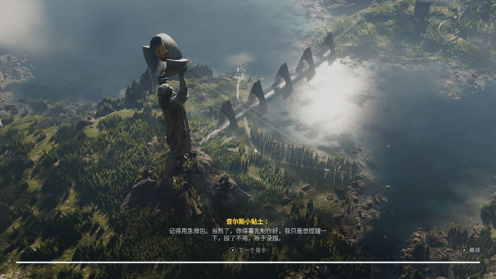
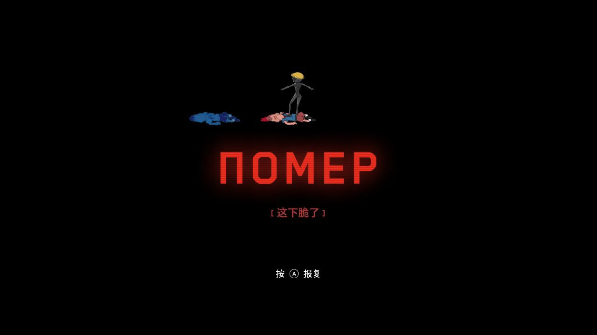
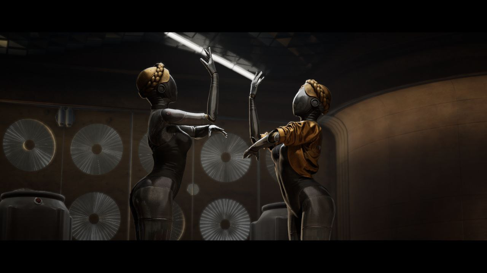
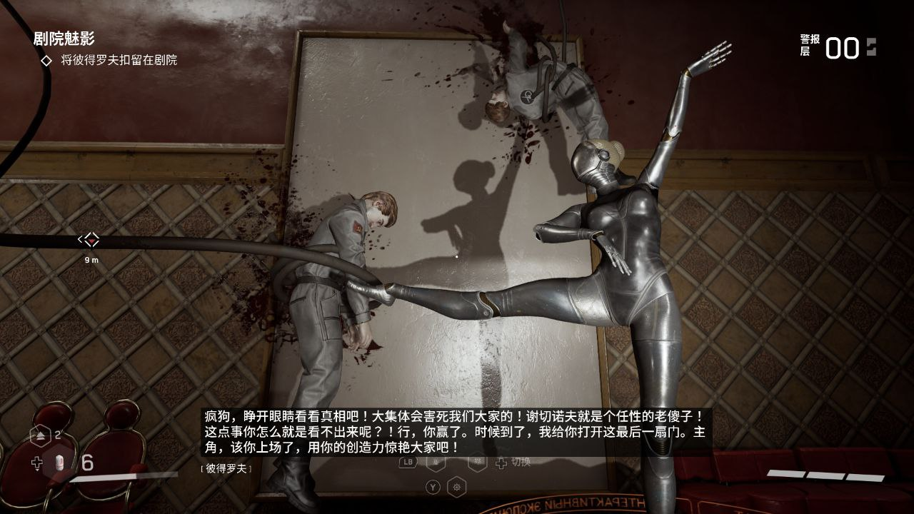

从概念图和 PV 开始就溢出屏幕的复古科幻的味道让人非常心动，而且首发 XGP 完全没有门槛。
对我来说，科幻的背景设定到五十年前和五十年后完全没有太大的区别，毕竟都算是“遥不可及”的时代了。而且虽然俄式游戏接触得不多，但是古老的科幻故事听了不少，这个带入起来是非常熟练了。
过去式科幻的醍醐味就是又老又新，有些是时代本身的限制，有些是故意做旧的效果。原子之心这次的做旧我觉得体验起来很满意，比波士顿的狗还灵活的机器人，脸上是面具一样的表情；空天浮岛上建的是老式步道和小红瓦房；激光感应的锁锁住的电梯里挂着的是转盘电话等等。此外，美术设置非常优秀——这也是最突出的亮点。而且不只是美术本身，作为大背景设定的两极争霸和红色风格也让人觉得非常复古。加上一开始就能见到的一堆奇观、超大雕像、超大人像海报和没有感情的复读机人等等，再一连想到游戏刚发售的时候的那段小学生景区介绍，只能说太艺术了。

虽然美术音乐设定等等都和上乘，但是作为游戏本身的 game play 部分还是让人有点头疼（字面）。虽然是在一个很不错的场景里，但是没过多久就丧失了探索的欲望。在路上满是怪物，如果不是也马上就是了。敌人超远的索敌范围，联动和增殖机制，使得在户外的时候永远别想停下来。而与此相对的是较低的收益和较差的攻击体验，苦苦战斗不如直接逃跑。还有随处可见的有形围墙，以及不可见的 bug 形成的空气陷阱，不沿着主路走马上就会教你后悔。
这一套流程下来，在户外直接奔向下一个目标点变成了最优解。路边的小屋？没看见，里面指定一堆不知道什么东西等着你，搜刮完大概率也就几颗子弹，而且子弹本身就用不完。后来去云了些开发花边，听说有许多之前早期阶段展示过的怪物都被移除了，原因是担心影响探索体验。看了下移掉的那几个更是逆天，哼着小曲开着车给你来一套 QTE 的鸨式和天花板上的倒挂惊吓魔盒铁蜘蛛。只能说改了但没完全改。
只需要跑路还不是最痛苦的，游戏里向前方移动和向侧/后方移动的速度是不一样的，显示的视野也不是很大，玩着玩着就容易头晕，个人体验是只能撑半个小时。我猜可能是为了省掉前进的时候需要一直按着跑步键所加的设定吧，但是不说在需要拐弯的时候会很自然地左右摇杆一起打，平常走路看到个箱子什么的也会动摇杆，这时候突然慢下来就跟踩了什么东西一样，手感稀烂。完美地模拟了晕车的感觉：你不知道师傅什么时候油门什么时候刹车，只有你的前庭系统和眼睛在脑子里面打架。
地图设计感觉也能再提升一下，地图上还放了巨量的只有一截的死路，很容易走着走着忘记刚刚想要去看的地方是哪里，纯纯的反向引导。有些npc的位置也很奇怪，有放到存档点外面的，有三四个储物箱连续放一起的，还有一开始有一条往接下来走的路放到了安全区内，来来回回绕了半天才发现。
除了美术剧情，战斗也是占比比较大的一部分内容，提供了三四套技能，三种元素和一堆不同动作的武器能够使用，而且还有非常先进的无痛洗点科技鼓励尝试各种组合，构筑体验不用纠结了。不过等到构筑完上手实操的时候会发现，游戏不带视角锁定的，别说远程武器的瞄准，光是想知道敌人的方位就费老大劲了。打大型boss或者混战的时候基本就是全程在转圈圈（莱因哈特.gif）。

不过每次死亡都有一个小动画看（
可能鼠标操作还相对好一点，但是手柄玩家操作起来真的怀疑staff自己打不打。怪物随便一个动作就冲出了视野，它要是高兴你的右摇杆根本放不开。打了几场之后专门出去把闪避改到手柄背键，不然完全就是站桩活靶子。
另外怪物的种类相对来说还算可以，前面还说删了好几个。但是实际游玩起来还是觉得非常重复和枯燥。不仅是刷新得太密集了，而且喜欢滥用也是一个原因，有事没事总要给你放点怪在旁边生怕你闲着。最受不了的一次是还在电梯里面过剧情，突然电梯到了，门打开冲过来一个小胡子给我就是一拳，等我打完刚刚手套说了什么完全不记得了。
解谜要素也是类似，初见流程走下来已经熟练地掌握了三种苏联高科技电子锁的开锁方法，这种完全重复，又不怎么需要动脑子的内容在关键的地方锁一两下就算了，有的地方大路上走得好好的也要给你来把锁卡一下实在是意义不明。其他的场景谜题也直接进行一个重复的使用，试验场和外面剧情遇到的谜题（在我打过的里面）是完全一样的，给人为了放谜题而放谜题的感觉。主角语音自己也吐槽很多次，看起来是故意的。
最后程序质量也有点问题， 没有征兆地闪退了好几回，还有基本全程存在的跳对话时候的花屏等等。对手柄操作模式的适配也很敷衍，在这里发表一个爆论：凡是手柄模式下还出现自由光标ui的一律扣分，必须使用光标的直接0分。

图文无关，只是想放一张双生舞伶在这里
故事设定的王道（？）苏联不特色Communism背景，以及这个大集体简直是教科书般的刻板印象：
采用这一方法的学者一般不会对其理论中的人的行为模式做出详细说明。……主义理论并未对人的行为模式做出详细界定，……主义理论中，生产方式和与之相适应的阶级关系被看作历史发展的唯一主线。
首发中文的游戏现在越来越多了，但是首发中文语音，而且还是这么优秀的配音质量和完全融入的本地化效果现在也很少见到（甚至把本土游戏算上也是这样）。最出圈的就是红色魅魔小冰箱，在客厅外放确实有些羞耻。场景素材里面所有（我遇到的）的文字都做了翻译，准心对准就会显示出来，有些场景还直接将素材做成了中文的。对一个十小时流程的游戏来说文本量应该算偏多的那一档了，联动最近星空偷跑出来的zh-MS，简直是云泥之别。文本汉化还能靠用爱发电，但是优秀的配音现在还只有厂商能提供，现在的科技更多的也只是在音色层面的转换，融入感强还得靠人声，上一次有这种配音体验是很久之前了。卷这些不比画质数毛、光追阴影来得更拟真？
配乐在几场关键战斗和剧情都挺有代入感的，可能跟本来乐库丰富也有关系吧，跟多还都是符合设定的时代和背景的。当然也没有完全局限在苏联音乐里面，在柳树培育间那首无人声的魔笛也让人印象比较深刻。流程中还有一个场景就是设定在歌剧院里面，上演着机器人芭蕾舞的表演。用很有创意的方式一边展示美术设计，一边推进剧情背景，截图键全程高强度上班。芭蕾和歌剧都看得比较少，但是觉得这里用机器人展示的东西很棒，可惜的就是没有完整的一幕，而都是几个零散动作的表演。

剧情推进方面还有几段画风突变的、有点意识流的过场。角色断片之后突然出现在一个奇妙的地方，周围几个声音一直对你讲着听不懂的谜语。可能是路上偷懒没有看到相关的剧情提示，在操作的时候多少是有点云里雾里的。不过可能也不太影响，这几段的操作本身也比较弱，基本只要走路就行了，也许反而更加贴近角色当时的感觉。
最后决战篇对留下来的伏笔进行了回收，包括这几段过场也给了解释（不过还是不知道那只猫猫到底是什么？）。但是！这个结局实在是太绷不住了，最后二十分钟的流程跟我的小学作文一模一样，一看字数差不多了就直接来个唐突结尾。最后决战前会给你两个选项，类似选边的。里面一个是冲进去打几架，然后输输输，另一个直接 “我不干了，我要去海滩度假” 然后开始结束播片。当时心情是非常震撼的，怀疑自己到底看了个啥。
我不写了，我要去睡觉